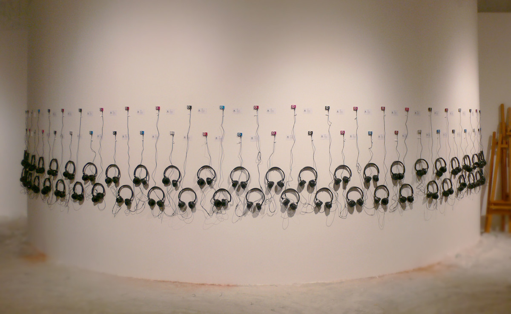
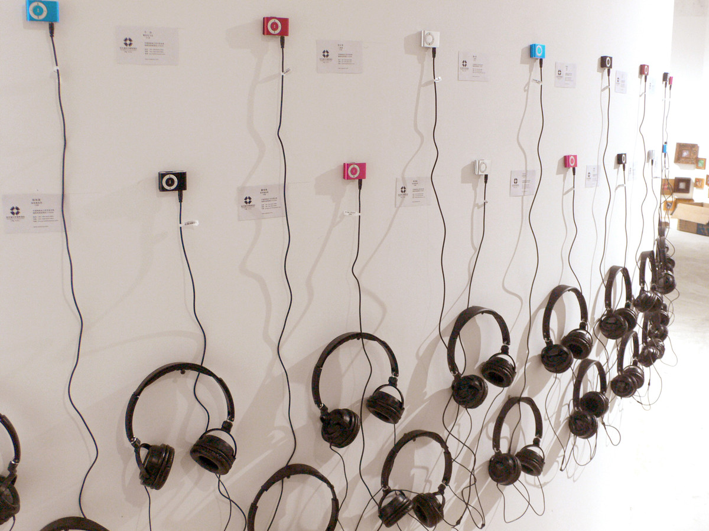
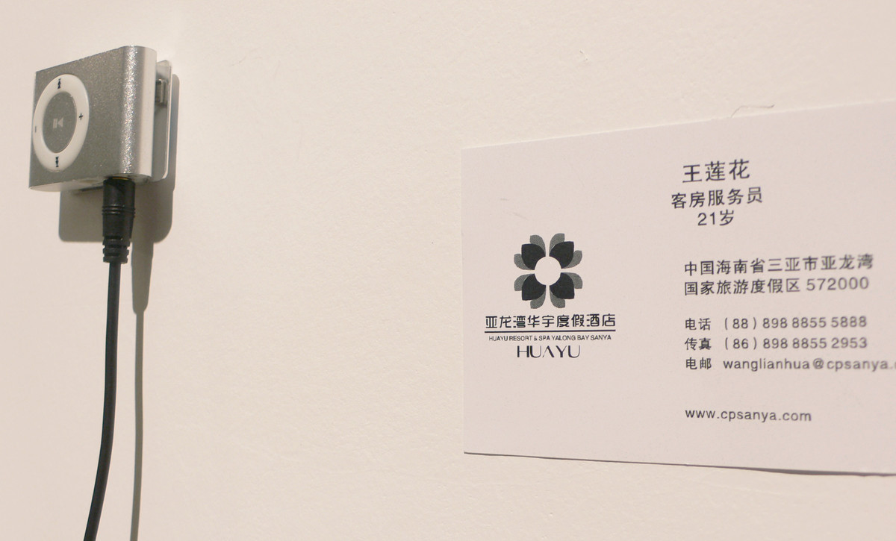
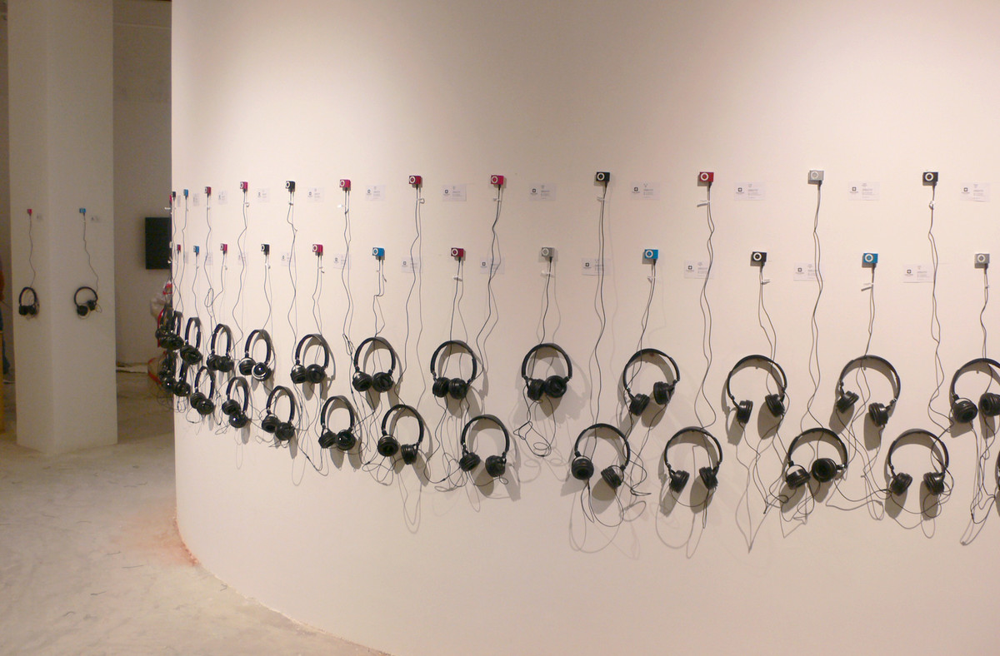

当我们唱起这首歌 | WHEN WE SING THIS SONG

行为，装置，可变尺寸，2012
Action, Installation art, Variable, 2012
艺术家邀请了60个在海南省某五星级酒店的女性工作人员，请她们唱一首《红色娘子军》。如果她们忘记了这首歌，艺术家将为她们歌唱。
The artist invited 60 female staffs at a five-star hotel in Hainan province to sing the song " The red detachment of women". If they forget the song, the artist will sing for them.
《红色娘子军》是一首创作于1950年代的歌曲，描述了1930年代活跃于海南省的一支女性游击队抵抗资本家和地主压迫的故事。
"The red detachment of women" is a song written in the 1950s that tells the story of a female communist guerrilla army that was active in Hainan province in the 1930s, resisting the oppression of capitalists and landlords.

第一届艺术三亚艺术季，三亚
The first art Sanya art season, Sanya

第一届艺术三亚艺术季，三亚
The first art Sanya art season, Sanya

第一届艺术三亚艺术季，三亚
The first art Sanya art season, Sanya